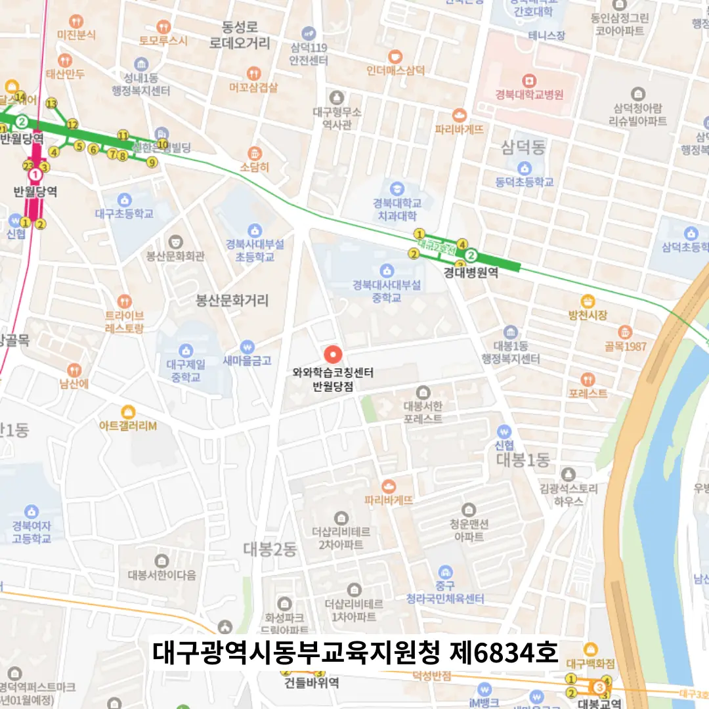

반월당 초등학생 수학학원
반월당 초등학생 수학학원
만촌동 중심에 조용히 자리 잡은 학습 공간에서 시작된 기말고사 대비 2주 집중 루틴은 일관된 계획과 실천 체크, 시각적 관리, 피드백 워크숍을 포함하며, 이러한 구조화된 접근이 연속 90점대 진입이라는 성과로 연결되었습니다. 전문가들은 이런 상황을 극복하기 위해, 시험 전날 압축된 개념 정리 자료를 활용해 핵심 요소를 정리하고, 매일 일정한 시간에 부족함을 인지하고 보완하는 체계적인 접근 방식을 채택할 것을 권고한다. 반월당 초등학생 수학학원은 중요한 내용은 매일의 루틴 속에서 고정하여 자동화하고, 주 1회는 전체 지식의 도식화를 시도하면서 개념 간 상호작용을 시각적으로 재생산하는 시간을 가지는 것이 바람직하다. 마지막으로, 학습에 대한 전체적인 접근 방식을 조정하는 것이 중요하다. 학습은 시간이 아니라 목표 중심으로 계획되어야 하며, ‘오늘 이 개념을 세 가지 예로 설명할 수 있게 되는 것’이 목표라면, 그 달성 여부가 성공의 척도가 된다. 반월당 초등학생 수학학원은 마지막으로 News and Media Literacy를 포함한 현대 사회의 정보 활용 능력을 함양하도록 교육함으로써, 학생이 학습한 내용을 실제 생활 속에서 적용하고 비판적 사고를 발휘할 수 있도록 마무리한다. 학생들은 중요한 시험일이나 과제 마감일을 역산하여 체계적인 계획을 세우는 과정에서 흔히 시간 관리의 함정에 빠지기 쉽다.